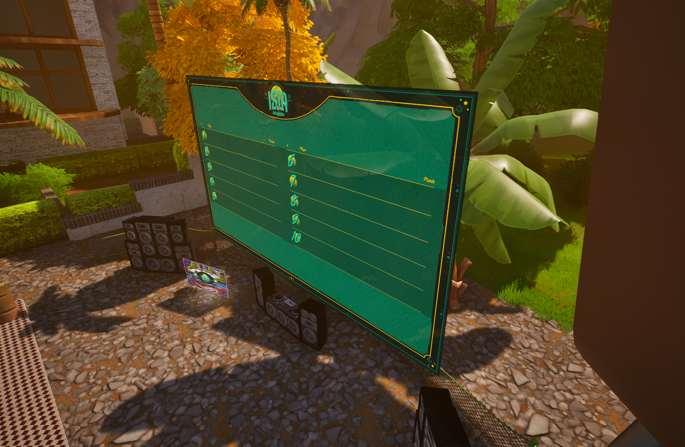
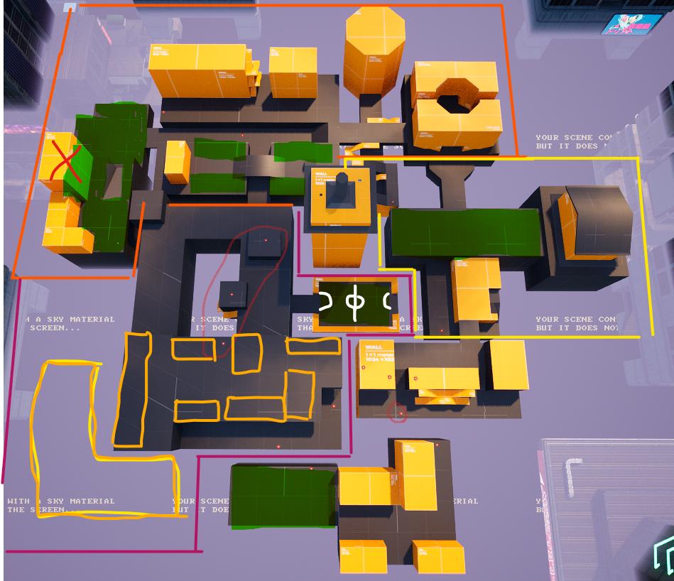
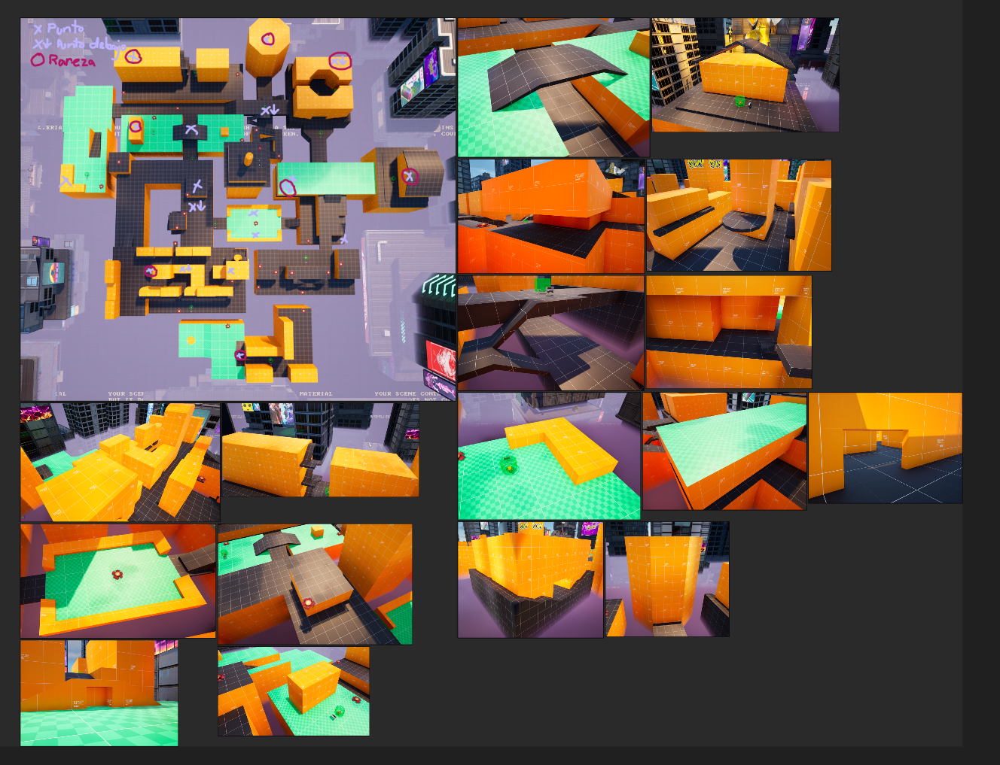

Mapas personalizados Fortnite
Puesto
Diseñador de niveles
Descripción
Trabajo haciendo mapas para Fortnite en UEFN
- Diseño de diversos mapas de juegos: shooter, conducción, plataformas, prop hunt, Battle royale...
- Ajustarse a cortos plazos de entrega que empujaron a recortar flujos de desarrollo dependiendo del mapa
- Documentación con diagramas del gameflow de cada juego y estructura multijugador (Mermaid)
- Layout de niveles shooter, controlando distancias y coberturas para hasta 40 jugadores simultáneos (Inkscape)
- Investigación de assets de Fortnite para encontrar temáticas y reutilizar mecánicas ya implementadas
- Blocking alternando modelado de Unreal y assets de Fortnite, creando blueprints para fácil sustitución
- Set dressing con assets de Fortnite y custom, optimizando tipo y cantidad para cumplir con las limitaciones
- Investigación de otros mapas en busca de workarounds, ideas y trucos para saltar limitaciones de Fortnite
- Creación de Shaders para ciertos assets custom y poder mejorar el gamefeel
- Adaptar marca y grafismos de empresa al juego respetando colores y proporciones
- Formar parte de la organización del evento en vivo en la Gamergy

Encargos
Sponch

